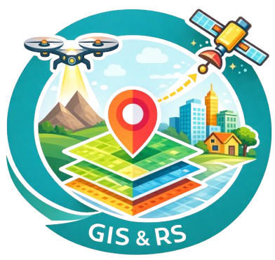

楊宇恩
博士（資源工程）
國立成功大學 衛星資訊中心
具備「Machine Learning × Computer Vision × 遙測影像分析 × WebGIS 系統落地」之整合能力， 以 Python 為主要開發語言，使用 TensorFlow / Keras 進行深度學習模型訓練 （CNN／YOLO／GAN），並結合 GPU（RTX 4090）進行大尺度資料運算。 可自資料流程建置、模型訓練與驗證， 至系統部署與平台化，完成政府與產業場域之端到端 AI 解決方案交付。
📍 臺南，臺灣
｜
✉️ unron0830@gmail.com
｜
 ｜
｜


核心技術能力
- Machine Learning / AI： CNN、YOLO、GAN（cGAN）、Random Forest、XGBoost ｜Python、TensorFlow / Keras（PyTorch experience）
- 程式與資料處理： Python、SQL、C#， 大尺度影像處理（40,000+ images）、特徵工程、GPU 加速運算
- 遙測與 GIS： Google Earth Engine、QGIS、ArcGIS、UAV 攝影測量
- 系統開發與部署： ASP.NET MVC、WebGIS、REST API、模型推論服務整合
代表性專案
-
含石綿建材 AI 辨識與管理系統（WebGIS + YOLO）
建立 YOLO 物件偵測模型，處理 4 萬筆以上 UAV、街景與手機影像， 並整合至 WebGIS 平台，支援政府大尺度盤查與決策應用。 -
cGAN 地形變遷（DoD）與崩塌量體推估
以多時期遙測與地形資料建立生成對抗網路模型， 支援山崩體積變化分析與災害評估流程。 -
GBSAR / ArcSAR 邊坡變形監測
分析毫米級地表變形資料，支援邊坡穩定監測與預警判斷。
現職經歷
-
專案工程師／GIS 顧問（政府委託專案）
國立成功大學 衛星資訊中心 博士後研究員
國立成功大學 水科技研究中心 博士後研究員